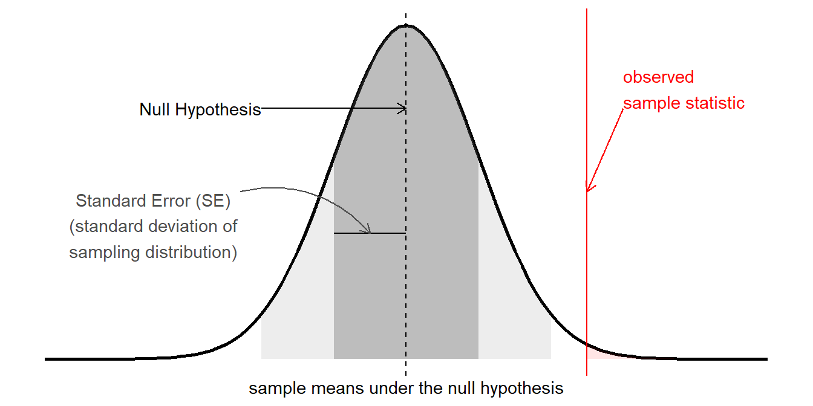

Inference for LMM
Inference
The term “inference” is used to refer to the process of moving from beyond a description of our specific sample to being able to make statements about the broader population from which we have sampled.
In the framework for statistics that we have been learning, this centers on the idea of samples statistics that we might see in the long run (i.e. if we did the experiment again and again and again with a new sample each time).
In USMR, we saw various ways in which this logic was applied, combining the observed sample statistic with the standard error to create a test statistic (\(z\), \(t\), \(\chi^2\), \(F\), then compared to the appropriate standard distribution).
In the linear models we were making with lm(), these were \(t\) (for the coefficient estimate) and \(F\) (the reduction in residual sums of squares) tests, and accordingly they had an associated degrees of freedom. If we fit a linear model lm(y~x) to 10 datapoints, then our tests would have \(10-2=8\)1 degrees of freedom, and test statistics would be compared against, e.g. a \(t\) distribution with 8 degrees of freedom. Alternatively, if we fit the same model to 100 datapoints, we would be working with a distribution with 98 degrees of freedom. The degrees of freedom reflects the fact that there is more variability in statistics from smaller samples.
Another way of thinking of degrees of freedom is that they are the number of independent datapoints that are left “free to vary” around our model parameters.
But we are now working with multilevel data, and in the scenario where we have, e.g. \(n_p\) pupils clustered into \(n_s\) schools, how many independent bits of information do we have to begin with? \(n_p\)? \(n_s\)? somewhere in between? Our random effects are not “free to vary” in the sense that they are estimated under certain constraints (such as following a normal distribution).
In very specific situations that correspond to classical experimental designs (in which, e.g., we have perfectly balanced numbers across experimental factors and equal sizes within groups) it is possible to conduct similar \(F\) tests (and so \(t\) too) with a calculable degrees of freedom. Unfortunately, transferring this to more general scenarios (any missing data, unbalanced designs, more complex random effect structures) is problematic. Partly because defining the degrees of freedom is much more tricky, and partly because the test statistic may not even follow an \(F\) distribution with any degrees of freedom.
However, there are various strategies that we can use to conduct inferences that either attempt to approximate the degrees of freedom, or use an alternative method based on, e.g., likelihoods or bootstrapping.
Below, we’ll go through each method in R, applying it to the following model (recall this is the model we ended with in reading 1B).
library(tidyverse)
library(lme4)
schoolmot <- read_csv("https://uoepsy.github.io/data/schoolmot.csv")
smod3 <- lmer(grade ~ motiv * funding +
(1 + motiv | schoolid),
data = schoolmot)
df approximations (Satterthwaite & KR)
Two methods have been suggested as approximations for the denominator degrees of freedom for multilevel models.
satterthwaite
kr
# ddf ----
d3=slice_sample(d3,prop=.78)
m0 =lmer(ACE ~ visit + condition + (1+visit|ppt), d3,REML=F)
m0r =lmer(ACE ~ visit + condition + (1+visit|ppt), d3,REML=T)
m1 =lmer(ACE ~ visit * condition + (1+visit|ppt), d3,REML=F)
m1r =lmer(ACE ~ visit * condition + (1+visit|ppt), d3,REML=T)
SATmodcomp(m1,m0) # refits with REML
SATmodcomp(m1r,m0r) # refits with REML
KRmodcomp(m1,m0) # refits with REML
KRmodcomp(m1r,m0r) # refits with REML
SATmodcomp(m1,m0) # refits with REML
KRmodcomp(m1,m0) # refits with REML
parameters::model_parameters(m1, ci_method="kr")
# CIs computed via REML, estimates, t, p not unless initial model fitted with REML
parameters::model_parameters(m1r,ci_method="sat")
# CIs computed via REML, estimates, t, p not unless initial model fitted with REML
likelihood based methods
parametric bootstrap
table!
Footnotes
\(n\) observations minus \(k\) parameters (slope of
x) minus 1 intercept↩︎